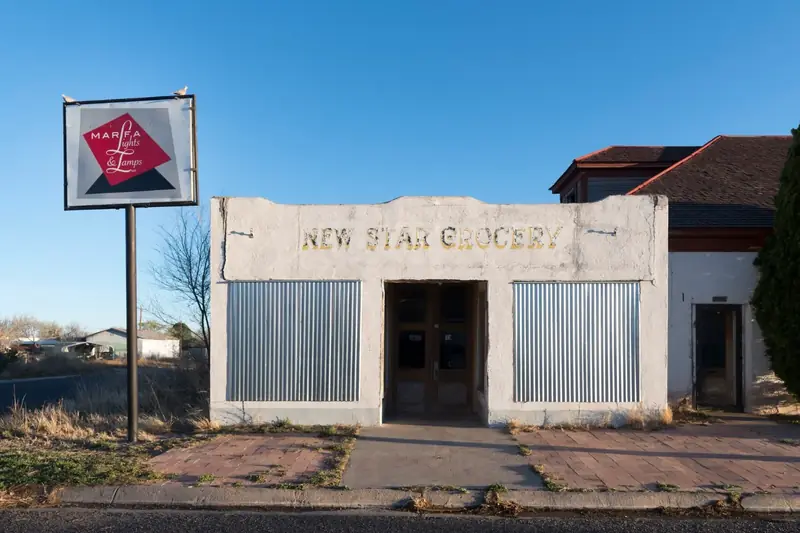

A light that has been watched for 140 years
The Marfa Lights belong to ranch history and local storytelling as much as to physics. This page separates what the record shows from what the stories say. Each claim links to where it comes from.

The record
- 1883Robert Reed Ellison, a young cowhand driving cattle through Paisano Pass, sees a flickering light. He first takes it for an Apache campfire. Settlers later search and find no sign of a camp. This is the account usually given as the first sighting.1
- 1885Early settlers Joe and Sally Humphreys report seeing the lights. Sources differ on her first name.1,2
- 1919Cowboys ride out over the mountains to find the source and come back with nothing.1
- 1942–45Marfa Army Air Field trains pilots on the flat east of town, with a main field and four auxiliary fields. The Viewing Area sits beside the old base. The Handbook of Texas records wartime aerial searches for the lights that found nothing.1,3
- 1957The first published account appears in the July issue of Coronet magazine and brings the lights to a national audience.2
- 1980sThe Marfa Lights Festival begins. The Marfa Chamber of Commerce held the 37th festival on Labor Day weekend 2024, on the courthouse lawn.5
- 2003The Marfa Mystery Lights Viewing Center opens at a roadside area on US-90, about nine miles east of Marfa.1
- 2004–09Organized studies arrive: a student physics team with traffic counts and signal lights, long-running camera stations, and spectroscopy. See The science.6,7,8
The stories
Local accounts give the lights personality. In the Handbook of Texas, Mrs. W. T. Giddings describes growing up with the lights as curious companions. She says her father credited them with guiding him to shelter in a blizzard.1
Folk explanations have ranged widely: the ghosts of Spanish conquistadors still searching for gold, moonlight glinting off mica, swamp gas and static electricity.1 None of these has evidence behind it, but together they show how people in each era explained what they saw.
The Apache presence in the stories is rooted in real history. Ellison's first thought was an Apache campfire. The last chief of the Chisos band of Mescalero Apache, Alsate, raided across this region into the 1870s. He was captured through a false peace offer at San Carlos, Chihuahua, and executed at Ojinaga in the early 1880s.4 Shepherds in the Chisos Mountains came to say his ghost haunted the range.9 Some popular retellings link Alsate's spirit to the Marfa Lights, but we found no documentary source for that link. We treat it as modern folklore, not history.

Why this matters for observing
Several early accounts predate cars on this road, which is why the "it's just headlights" answer never fully settled the question. The historical record is thin, though. Most accounts were written down decades later, and few give a bearing, a time or a duration. That is the gap a careful modern log can fill. See Visiting.
Sources
- Julia Cauble Smith, “Marfa Lights,” Handbook of Texas Online, Texas State Historical Association (1995, rev. 2017). tshaonline.org
- “Marfa lights,” Wikipedia, citing Brueske (1989) and the July 1957 Coronet article. en.wikipedia.org
- Lee Bennett, “Marfa Army Air Field,” Handbook of Texas Online, Texas State Historical Association. tshaonline.org
- “Alsate,” Wikipedia, citing Thrapp's Encyclopedia of Frontier Biography and O. W. Williams. en.wikipedia.org
- “Marfa Lights Festival returns for its 37th year,” Big Bend Sentinel, 7 August 2024. bigbendsentinel.com
- Michael Hall, “The Truth Is Out There,” Texas Monthly, June 2006. texasmonthly.com
- K. D. Stephan et al., “Spectroscopy applied to observations of terrestrial light sources of uncertain origin,” American Journal of Physics 77(8), 697 (2009). pubs.aip.org
- James Bunnell, Hunting Marfa Lights, Lacey Publishing (2009), ISBN 978-0970924940. Foreword Reviews
- “Nearly forgotten Big Bend legend: Apache Chief Alsate,” Bluebonnet News, 15 October 2021. bluebonnetnews.com